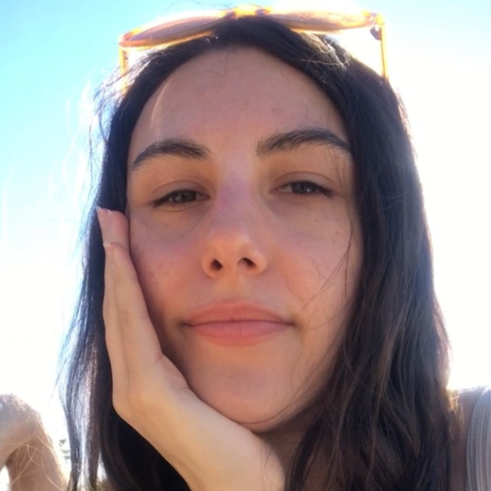

Min sida i kursen "JS"
Lite om mig
Hej! Mitt namn är Isabel. Född och uppväxt "söder om söder" i Stockholm (Farsta Strand). Sommaren direkt efter studenten mötte jag kärleken i Sundsvall på ett dop via gemensamma vänner. Kort därefter lämnade jag storstan och vi flyttade ihop i en liten etta på 29kvm i Hudiskvall där vi bott i 13 år.
På gymnasiet studera jag media på MediaGymnasiet i Nacka Strand med inriktining tv-produktion, film och grafisk design. Det sistnämnda var något jag verkligen ville fortsätta med. Men pga hård konkurrens (både i skola och på arbetemarknaden), dåliga genomsnitts betyg och inga kontakter inom branchen ledde mig till att lägga drömmen på is.
Förutom viljan att lära mig nya saker så driver jag en skönhetsblogg sen 10 år tillbaka. Kanske också ett av drivmedlen till att lära mig webbprogrammering, då jag alltid önskat ha mer kontroll över min hemsida.